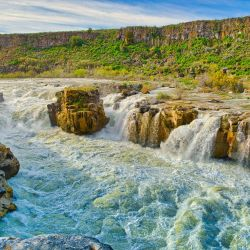
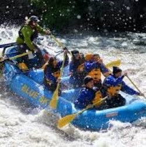
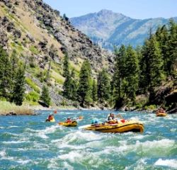

snake river
float down the snake river on this picturesque float tour meant for families. this excursion will take you along some of the best sights on the snake rivers. although not a very thrilling experience it has its Own form of entertainment showing you the most beautiful sights in all of idaho.
colorado river
this intense and thrilling experience offers many different difficulties of rapids. aswell the colorado river has some beautiful scenic views as you raft through its intense waters. rafting the colorado isnt for the faint of heart.
salmon river
Experience the thrill of whitewater rafting on the Salmon River, where exciting rapids and stunning scenery await. Navigate through a mix of mild and challenging Class II to Class IV rapids, perfect for both beginners and seasoned adventurers.
  